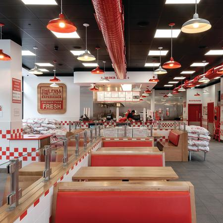
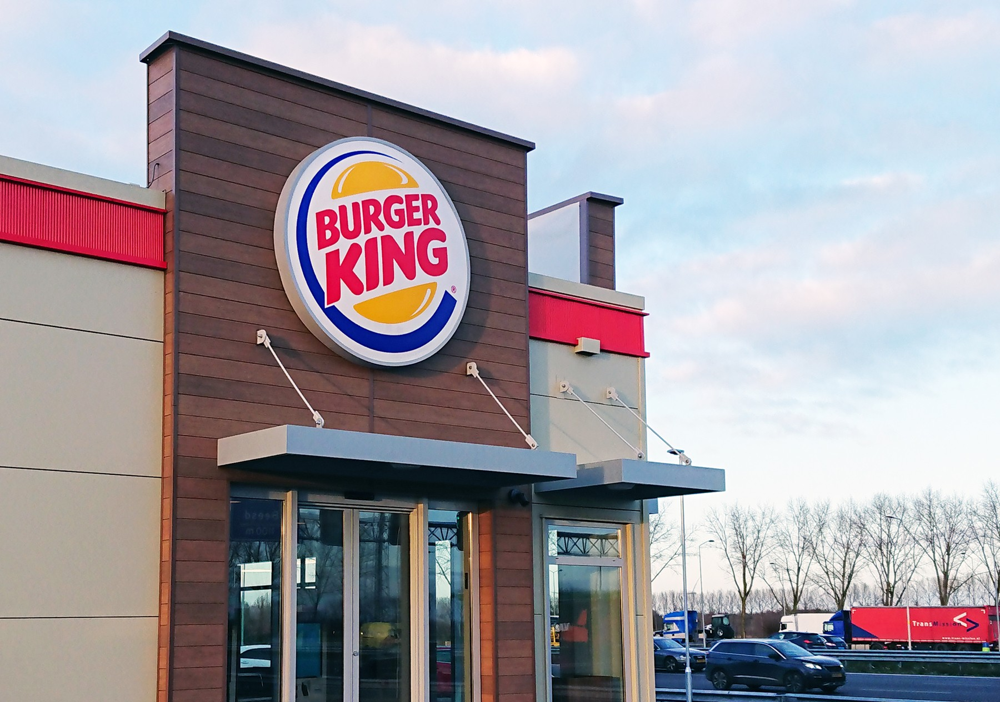
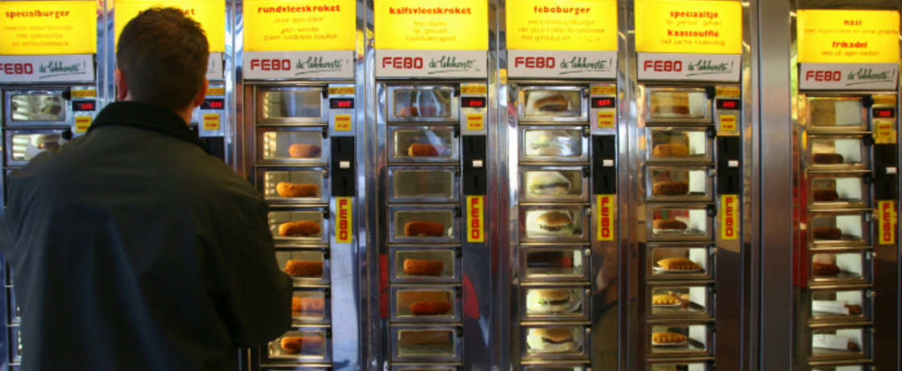
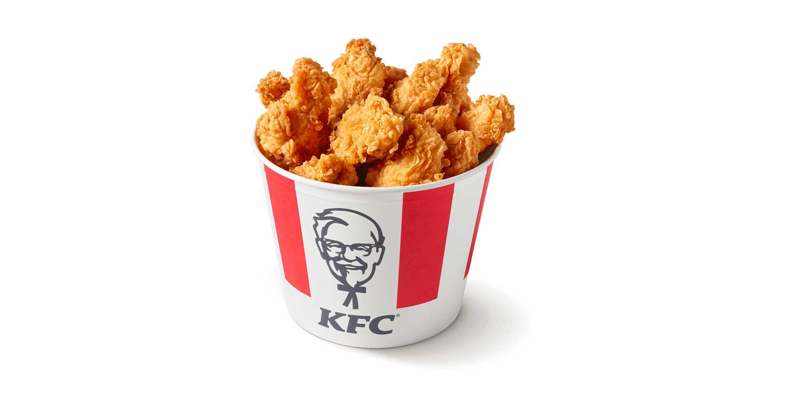
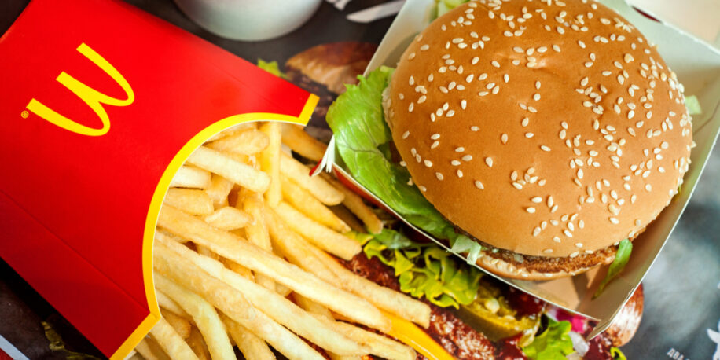

5guys
alles van hun is lekker

burger-king
veel burgers wel een beetje duur

FEBO
probeer hun club burger is zalig

KFC
je hebt niet geleefd totdat je een bucket in en je eentje heb opgegeten

Macdonalds
oud en vertrouwd en de dubbelen big tasty bacon in me beste vriend